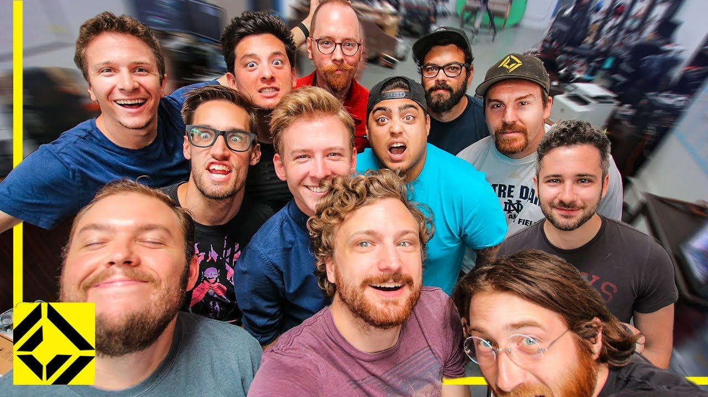
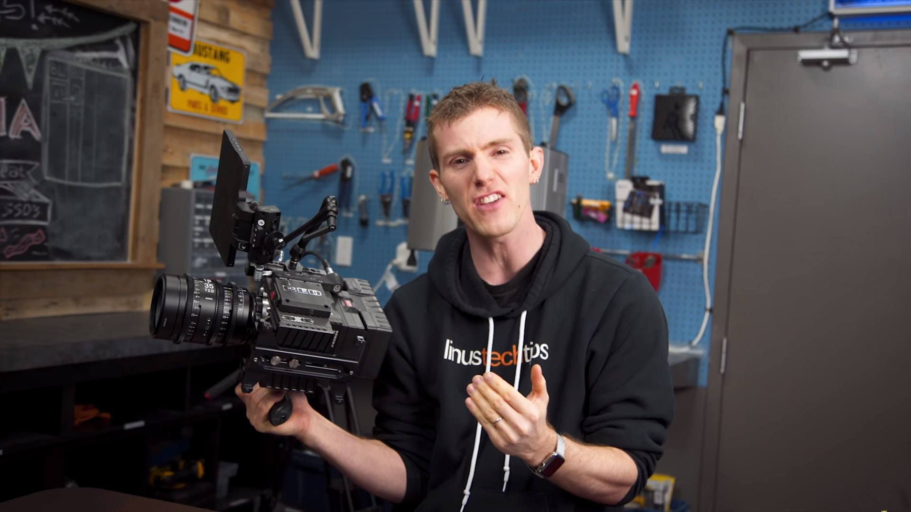

Hola!
Me presento: soy Tobia Raffaele Gasparoni Berdugo, una mezcla extraña entre la cultura italiana y colombiana que está terminando sus estudios en ingeniería de sistemas. Espero disfruten conocer un poco sobre mí.
En esta página pueden esperar ver varios pedazos de mí, por lo menos lo que estoy dispuesto a compartir con ustedes!
Datos Biográficos
| Categoría | Dato |
| Nacimiento | Barranquilla, Colombia - 6 de mayo 1999 |
| Etnia | Latinoamericano: 50% - Europeo: 50% |
| Tipo de sangre | AB+ |
Datos académicos
- Educación Ingeniería de Sistemas - Universidad de los Andes
- Período de estudio (hasta graduación) 2017-2022
- Área de tesis Traducción de modelos de optimización
Intereses
En esta sección se reflejan mis mayores intereses por fuera de la academia.
-
Corridor Crew es un canal que se dedica a experimentar con efectos visuales. La videoproducción es mi pasión.
 -
LinusTechTips es un canal dedicado a hablar sobre computadores de alta gama.

En esta sección se reflejan mis mayores intereses dentro de mi carrera.
-
Medium es una página que hace publicaciones sobre Computer Science.

-
FreeCodeCamp es una página que ofrece cursos de programación.

Formulario
En el siguiente formulario pueden ingresar sus datos para contactarme